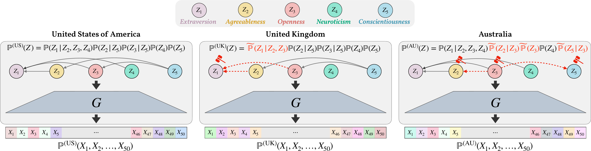
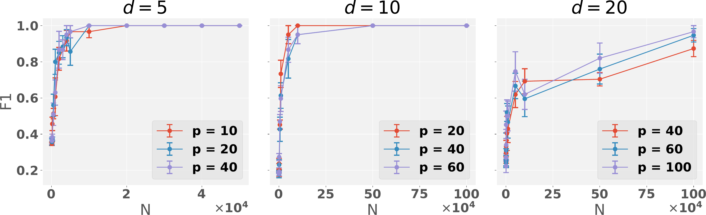
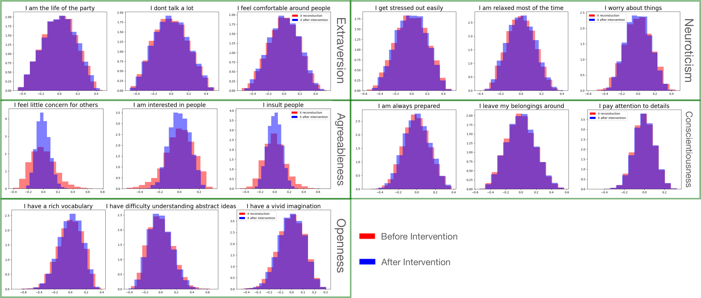

Identifying General Mechanism Shifts in Linear Causal Representations
When latent factors are entangled by an unknown mixing, the set of nodes whose mechanism changed across environments is still identifiable — even under interventions so coarse they rewrite the whole causal graph.
In linear causal representation learning, observations are a linear mixing of latent factors that follow a linear structural causal model. Prior work could recover the latent factors and their causal model only with at least as many environments as factors, each a perfect single-node intervention. This paper asks for far less and gives back something different: under very mild assumptions and as few as two environments, the set of latent nodes whose mechanism shifted is identifiable — even when interventions are coarse enough to add or remove edges, reverse them, or change several nodes at once. The identifiability proof is constructive, yielding iLCS, an ICA-based algorithm that bypasses estimating the mixing map and the latent causal model entirely, validated on synthetic graphs and a Big-Five personality dataset.
Overview
Causal representation learning (CRL) wants to recover, from raw observations, the latent factors that generate the data and the causal relationships between them (Schölkopf et al. 2021). In the simplest linear case, the observation X \in \mathbb{R}^p is a linear mixing X = GZ of d latent factors Z, and the factors themselves obey a linear structural causal model (SCM). A striking recent result (Seigal et al. 2022) showed this latent SCM can be recovered up to permutation and scaling — but only given perfect interventions on each of the d latent nodes, hence at least d environments. Both requirements are hard to meet: perfect single-node interventions on latent factors are difficult to obtain, and d can be very large.
This paper relaxes both demands at once by changing the question. Instead of reconstructing the entire latent SCM, it asks only for the list of latent nodes whose causal mechanism shifted between environments. That weaker target turns out to be identifiable under remarkably general conditions: the interventions may be soft or hard, hit single or multiple nodes, and — unlike essentially all prior CRL work — may add or remove parents, reverse edges, or change the entire causal graph over the latent factors. And it needs as few as K = 2 environments.

This places the work at the intersection of linear CRL (Seigal et al. 2022) and the direct estimation of mechanism shifts literature (Wang et al. 2018; Ghoshal et al. 2019; Chen et al. 2023), which localizes changes between distributions without first learning the full causal graph — but, until now, only when the causal variables are directly observed. Here the variables are latent, hidden behind the unknown mixing G.
From causal representations to ICA
The key technical move is to recognize the whole model as a linear independent component analysis (ICA) problem. With the noise convention Z = B^{-1}\epsilon, where B = \Omega^{-1/2}(I_d - A) encodes the latent SCM and \epsilon has independent, zero-mean, unit-variance components, each environment k satisfies
X^{(k)} = G Z^{(k)} = G\,(B^{(k)})^{-1}\,\epsilon^{(k)},
so X^{(k)} is a linear mixing of the independent sources \epsilon^{(k)}. Classical ICA identifiability (Eriksson and Koivunen 2004; Hyvärinen and Oja 2000) then recovers the unmixing matrix only up to a permutation and a sign flip per component. Writing M^{(k)} = B^{(k)}H with H = G^\dagger, what ICA actually returns is
\bar{M}^{(k)} = P^{(k)} D^{(k)} B^{(k)} H,
with P^{(k)} an unknown permutation and D^{(k)} a diagonal sign matrix. As Seigal et al. (2022) note, these ambiguities make it impossible to recover B^{(k)} itself under general interventions — which is exactly why prior work needed perfect single-node interventions.
The paper’s insight is that detecting shifts does not require undoing both ambiguities — only enough of them to compare rows across environments.
Unscrambling just enough
A mild test function assumption supplies the missing structure. The authors assume access to a function \psi that is invariant to sign flips, \psi(\epsilon^{(k)}_i) = \psi(-\epsilon^{(k)}_i), and that separates non-identically-distributed components, \psi(\epsilon^{(k)}_i) \neq \psi(\epsilon^{(k)}_j). A coarse example is \psi(y) = \mathbb{P}(|y| \le 1). Because \psi is the same across environments (the noise is identically distributed across environments, by assumption), sorting the recovered components by their \psi value undoes the permutation P^{(k)} consistently in every environment.
After sorting, only the sign ambiguity D^{(k)} remains, giving \widetilde{M}^{(k)} = D^{(k)} B^{(k)} H. The central identifiability theorem then says: a latent node Z_i is a non-shifted node between environments k and k' if and only if
\widetilde{M}^{(k)}_i = \widetilde{M}^{(k')}_i \quad\text{or}\quad \widetilde{M}^{(k)}_i = -\widetilde{M}^{(k')}_i,
i.e. its rows agree up to a sign. A supporting lemma rules out the troublesome case where a genuine shift could disguise itself as a sign flip, so equality-up-to-sign is exactly equivalent to “no shift.” This yields the main result.
Identifiability (informal). Given K \geq 2 environments satisfying the noise and test-function assumptions, all latent shifted nodes are identifiable — and the proof is constructive.
iLCS: a finite-sample algorithm
The constructive proof turns directly into iLCS (Identifying Latent Causal mechanism Shifts), which works from finite samples rather than full distributions. The number of latent factors d need not be known in advance: it is read off as the rank of the sample covariance \Sigma^{(k)} = \mathbb{E}[X^{(k)}{X^{(k)}}^\top], since all the underlying matrices are full rank. The procedure, per environment:
- Run ICA on the samples X^{(k)} to obtain \bar{M}^{(k)} and recovered sources \bar{\epsilon}^{(k)}.
- Estimate \psi on each recovered component and sort by it, undoing the permutation to get \widetilde{M}^{(k)}.
- For every coordinate i, compare rows across environment pairs with a normalized test statistic and flag a shift when it exceeds a threshold \alpha.
The population test statistic L_i^{k,k'} is built to be exactly zero when the rows match up to sign — i.e. when node i has not shifted:
L_i^{k,k'} = \frac{\min\bigl\{\,\lVert \widetilde{M}^{(k)}_i - \widetilde{M}^{(k')}_i \rVert_1,\ \lVert \widetilde{M}^{(k)}_i + \widetilde{M}^{(k')}_i \rVert_1\,\bigr\}}{\lVert \widetilde{M}^{(k)}_i \rVert_1 + \lVert \widetilde{M}^{(k')}_i \rVert_1}.
The algorithm is consistent: as the sample size grows the recovered shift set converges to the ground truth.
Experiments
Synthetic graphs
The authors generate Erdős–Rényi (ER) and Scale-Free (SF) latent graphs with d nodes and an expected md edges (m \in \{2,4,6\}), set the observed dimension to p = 2d, and randomly shift 15\% of the nodes in each environment via new edge weights and noise variances. With n = 10^6 samples and the threshold \alpha set to 0.2 for d \le 10 and 0.5 above, iLCS recovers the shifted set essentially perfectly in low dimension and degrades gracefully as the latent graph grows.
| Graph | p | d | Precision | Recall | F1 | Time (s) |
|---|---|---|---|---|---|---|
| ER2 | 10 | 5 | 1.000 | 1.000 | 1.000 | 1.23 |
| ER2 | 20 | 10 | 1.000 | 1.000 | 1.000 | 3.84 |
| ER2 | 40 | 20 | 0.933 | 0.833 | 0.873 | 10.34 |
| ER2 | 60 | 30 | 0.680 | 0.700 | 0.689 | 20.06 |
| ER2 | 80 | 40 | 0.610 | 0.600 | 0.605 | 30.59 |
| ER4 | 20 | 10 | 1.000 | 1.000 | 1.000 | 3.89 |
| ER4 | 40 | 20 | 0.933 | 0.933 | 0.933 | 9.39 |
| SF2 | 10 | 5 | 0.900 | 0.900 | 0.900 | 1.64 |
| SF2 | 20 | 10 | 1.000 | 1.000 | 1.000 | 3.84 |
| SF4 | 20 | 10 | 1.000 | 1.000 | 1.000 | 3.13 |
| SF4 | 40 | 20 | 0.967 | 0.900 | 0.927 | 15.12 |
Consistency holds as expected: across d = 5, 10, 20, the F1 score climbs toward 1 as the number of samples n increases.

The paper also reports (in its appendix) that in the fully-observed special case G = I, iLCS compares favorably to DCI (Wang et al. 2018), a method for direct mechanism-shift estimation in linear settings, outperforming it in most configurations.
Big-Five personality data
For a real-world test, the authors use responses to a 50-question Big-Five personality test from OpenPsychometrics.org (19,719 observations; 10 questions for each of Openness, Conscientiousness, Extraversion, Agreeableness, Neuroticism). The 50 item scores are the observed X; the five personality dimensions are hypothesized as the latent factors Z.
Before detecting shifts, each latent node must be labeled. Applying ICA to the male subset, the authors intervene on each recovered noise component (setting it to 0), remix, and observe which questions change. Zeroing one component shifts only the Agreeableness questions — so that node is labeled Agreeableness — and the same procedure labels the rest.

Treating gender as two environments, the per-node statistics L_i^{\text{male},\text{female}} come out as \{0.074, 0.050, 0.078, 0.638, 0.633\}; with \alpha = 0.5, the last two cross the threshold, flagging Neuroticism and Extraversion as shifted. This matches the psychology literature: women tend to score higher on Neuroticism, while men score higher on the activity facet of Extraversion (Kajonius and Mac Giolla 2017). Repeating the analysis across countries (US vs. UK) gives \{0.302, 0.258, 0.109, 0.189, 0.088\} — all below \alpha, indicating no detected shift, consistent with findings that personality structure is broadly stable across countries (Kajonius and Mac Giolla 2017).
Takeaways
By trading the ambition of full latent-SCM recovery for the more modest goal of locating shifted nodes, this work escapes the two costs that constrain linear CRL: the need for d environments and the need for clean single-node interventions. Recasting the problem as ICA and exploiting a sign-invariant test function to consistently unscramble the per-environment permutation, the shift set becomes identifiable from as few as two environments under interventions general enough to rewrite the entire latent graph — all while bypassing estimation of both the mixing map G and the latent causal model B. The authors point to nonlinear mixing — needed for settings like image data — as the natural next step.
The figures on this page are reproduced from the original paper, which is released under CC BY 4.0. A copyable BibTeX entry for this page is generated below.
Citation
@inproceedings{chen2024,
author = {Chen, Tianyu and Bello, Kevin and Locatello, Francesco and
Aragam, Bryon and Ravikumar, Pradeep},
title = {Identifying {General} {Mechanism} {Shifts} in {Linear}
{Causal} {Representations}},
booktitle = {Advances in Neural Information Processing Systems
(NeurIPS)},
date = {2024-10-31},
url = {https://arxiv.org/abs/2410.24059}
}